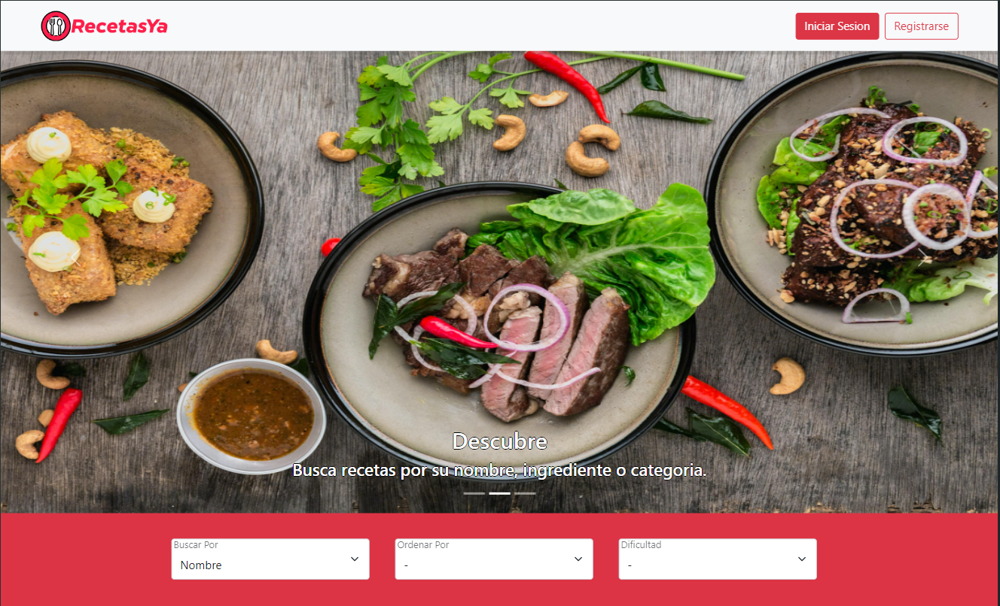
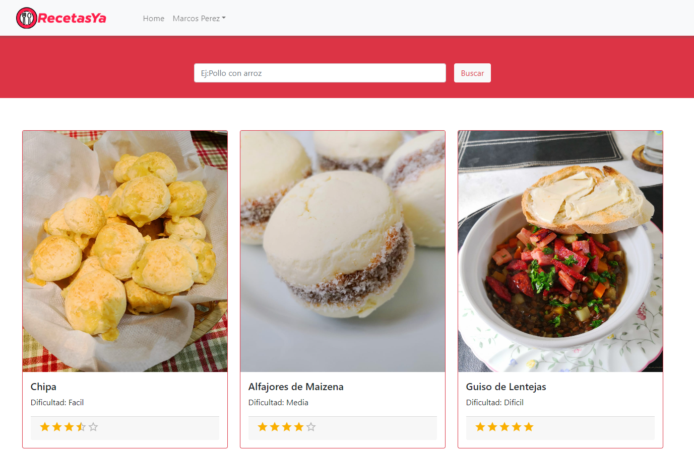
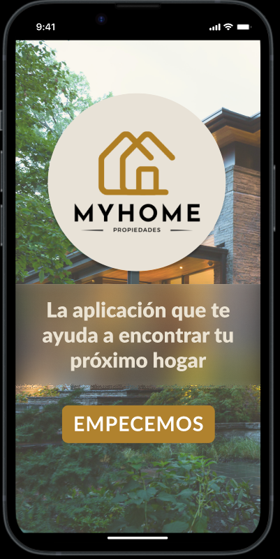
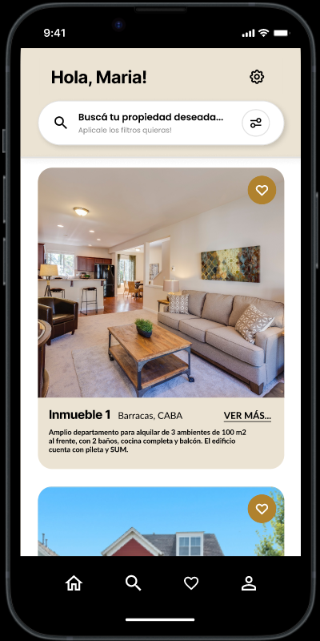
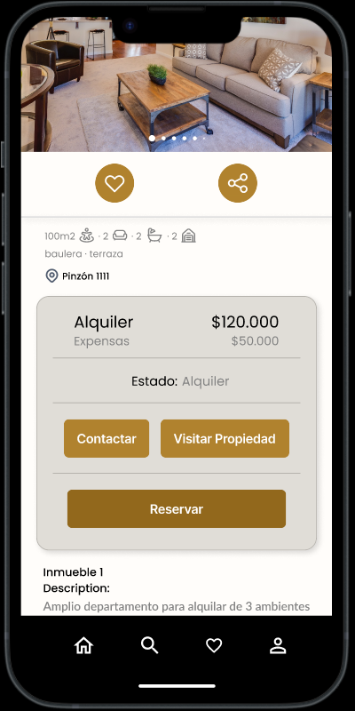

Portfolio
RecetasYa
Página web de visualización de recetas creadas por la comunidad. Contiene un buscador con filtros para encontrar recetas según las necesidades del usuario. Permite crear un perfil y subir y editar recetas con imágenes. La aplicación también permite dejar comentarios y calificar las recetas.
La aplicación utiliza HTML, CSS y JavaScript para el frontend, haciendo uso de ReactJs y librerías como Bootstrap, MaterialUI y Express.
En el backend, se utilizó NodeJs y MongoDb como base de datos, utilizando Mongoose para realizar las conexiones. La carga de imágenes de la aplicación se implementó utilizando Cloudinary.
El desarrollo fue realizado de manera individual


Enlaces
GitHub
MiHome
Aplicación Mobile para Android. App orientada a la venta y alquiler de propiedades. Permite la creación de 2 tipos de usuarios: inmobiliarias y compradores. Las inmobiliarias pueden cargar nuevas publicaciones con todas las especificaciones necesarias de los inmuebles a la venta o en alquiler, incluyendo imágenes y videos. Los compradores cuentan con un buscador de propiedades con filtros, pueden dejar comentarios y calificar inmobiliarias, y agregar propiedades a favoritos.
El frontend está desarrollado en React Native utilizando JavaScript, CSS y Expo para correr la aplicación.
El backend se desarrolló con NodeJs y una base de datos en MongoDb.
Se implementó también un inicio de sesión con Google y obtención de las propiedades mediante geolocalización gracias a la API de Google.
El desarrollo fue realizado en un equipo de 5 integrantes. Mi rol fue en su mayoría en el frontend, aunque también ayudé con el backend.



Enlaces
GitHub
Proyecto final de Ingeniería
Creación de un modelo de machine learning diseñado para predecir ventas, hits y géneros populares de videojuegos a nivel mundial en el año 2024.
Desarrollado en Python implementando modelos de regresión y clasificación.
Actualmente en desarrollo en un equipo de 2 integrantes.